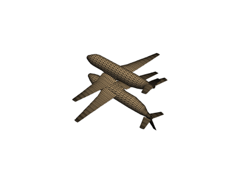

Filtering#
These examples show case various mesh analysis and filtering routines present in the Filters module. Explore these demos to perform tasks such as:
Slicing and cutting meshes
Computing mesh properties like volume, area, and surface normals
Mesh decimation
Extract regions of one mesh using another mesh’s surface
Ray tracing through surface meshes
Resampling and interpolating scalar/vector values across meshes
Integrating a vector field to generate streamlines
Smoothing surfaces
Boolean Operations
Extract Cell Centers
Clipping with a Surface
Clipping with Planes & Boxes
Collision
Computing Surface Normals
Volumetric Analysis
Connectivity
Contouring
Decimation
Distance Between Two Surfaces
Extract Cells Inside Surface
Extract Edges
Extract Surface
Extrude Rotation
Extrude Trim

Gaussian Smoothing


Table of Glyphs
Compute Gradients of a Field


Integrate Data
Interpolating
Computing Mesh Quality
Ray Tracing
Project to a Plane

Reflect Meshes
Resampling
Rotations


2D Streamlines
Subdivide Cells
Surface Smoothing
Surface Reconstruction
Using Common Filters

Warping by Vectors